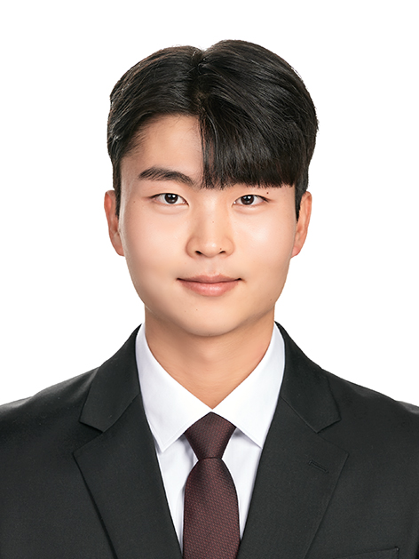

\
주요 업무는 고객과의 납기 준수를 위한 생산 일정 조율, 매출 실적 관리이며, 생산 공정에서 발생하는 공수 및 실적 데이터를 기반으로 효율성을 분석하고 개선 방향을 제시합니다.
\
또한 완성품 및 중간재 재고를 체계적으로 관리하여 자재 흐름을 최적화하고, 불필요한 재고를 줄이기 위한 방안도 함께 마련합니다.
\
특히, 많은 양의 데이터를 다루는 업무 특성상 데이터 기반의 분석과 판단 역량이 매우 중요하며, 이를 바탕으로 생산성과 업무 효율을 높이는 다양한 혁신 활동도 지속적으로 추진하고 있습니다.','저는 대학 시절 학생회장을 맡으며 다양한 데이터를 분석하고 책임감 있는 판단을 내리는 역량을 실무적으로 기를 수 있었습니다.
\
학생회장으로서 수많은 학우의 다양한 의견을 수렴하고, 때로는 상충되는 입장 사이에서 데이터를 기반으로 설득과 조율을 이끌어내는 역할을 수행했습니다. 특히 전체 회의나 간담회 등 의사결정이 필요한 상황에서 모든 구성원이 납득할 수 있도록 의견을 구조화하고 전략적으로 판단하는 능력을 키울 수 있었습니다.
\
이러한 경험은 실제 현업에서 다양한 생산 및 경영 데이터를 분석하고, 그 결과를 바탕으로 객관적이고 신뢰할 수 있는 판단을 내려 상위에 보고해야 하는 사업기획 업무와 매우 잘 맞는다고 생각합니다.')">
성민규 인턴
엔진기계사업기획부

김동현 인턴
엔진개발부

전수민 인턴
힘센엔진설계부
\
영국으로 교환학생을 다녀오며 영어 구술 능력을 집중적으로 향상시킬 수 있었고, 다양한 상황에서 외국인과 자유롭게 소통했던 경험이 실무에 도움이 되었습니다.
\
또한 대학 시절 조별과제를 수행할 때마다 발표를 자주 맡으며 자신감 있는 말투, 명확한 전달력, 논리적인 발표 흐름을 꾸준히 연습해 왔고, 이러한 커뮤니케이션 역량은 고객과의 기술 협의나 제안 설명 등에서 효과적으로 활용될 수 있다고 생각합니다.')">
정명수 인턴
엔진시스템기술영업부

노건우 인턴
생산기술2부
\
비유하자면, 시나리오를 쓰는 작가처럼 전체 생산 흐름을 설계하는 부서로, 필요한 공정과 장비를 정의하고, CAM/NX 등을 활용해 CNC 프로그램을 개발하며, 장비 시뮬레이션을 통해 이상 여부도 사전에 검토합니다.
\
아울러 현장 과제를 해결하며 공정 개선과 생산성 향상에도 지속적으로 기여하고 있습니다.','생산기술 1부에서는 도면을 이해하고 수정하는 일이 자주 발생하기 때문에 3D 툴 활용 역량이 중요하다고 생각합니다.
\
저는 대학 시절 일반기계기사 자격증을 준비하며 AutoCAD와 NX UG 등의 3D 툴을 집중적으로 학습하였고, 이를 통해 도면을 해석하고 수정하는 능력을 기를 수 있었습니다.
\
이러한 경험은 실제 업무 수행 시 생산도면을 기반으로 한 공정 설계와 수정 업무에 큰 도움이 되었다고 생각합니다.')">
민성제 인턴
생산기술1부
\
3D 모델링 및 도면 작성은 물론, 기술사로부터 전달받은 도면의 건전성을 검토하고, 실제 장비 구성에 맞춰 부품 내역 문서를 작성합니다.
\
또한 제작, 시운전, 커미셔닝 과정에서 발생하는 다양한 기술적 이슈를 분석하고, 적절한 해결책을 제시하는 역할도 담당합니다.',
'저는 학부 시절 엔진 관련 실험실에서 연구 인턴으로 활동하며, 엔진뿐만 아니라 EGR, SCR 등 관련 장비들에 대해 깊이 있게 학습한 경험이 있습니다.
\
이러한 경험 덕분에 엔진설계와 관련된 실무 용어를 빠르게 습득할 수 있었고, 다양한 기술 자료를 정리하며 문서 작성과 발표 역량도 키울 수 있었습니다.
\
특히 PPT와 보고서 작성 경험은 설계 변경 내용이나 기술 자료를 체계적으로 정리하는 데 많은 도움이 되었다고 생각합니다.')">
김동현 인턴
대형엔진설계부
\
주요 업무로는 설계·생산 부서의 업무 시스템 기획 및 운영, 현장 자동화 및 DX(디지털 전환) 기획이 있으며, 사용자의 요구를 반영한 시스템 고도화 및 지속 가능한 프로세스 개선을 통해 업무 혁신을 주도합니다.
\
1) 업무 시스템 기획 및 운영\
부서에서 사용하는 업무 시스템(PDM, ERP, MES 등)을 기획하고 사용자 요구를 수렴하여 시스템 고도화, UI 개선, 프로세스 자동화 등을 추진하고 개선합니다.
\
2) 스마트팩토리 및 디지털 전환\
생산 현장의 디지털 트랜스포메이션(DT)을 기획하고, 스마트팩토리 솔루션 도입을 추진합니다.
\
3) 시스템 운영 및 사용자 지원\
사내 시스템의 안정적 운영과 사용자 교육, 문의 대응 등을 통해 현업의 업무를 지원합니다.',
'학부연구생으로 실험실에 참여하며 자동화 설비 운영 및 실험 데이터 처리 시스템 구축에 직접 참여한 경험이 있습니다. 연구 초기에는 실험 결과를 수기로 정리하던 방식을 개선하고자, Python을 활용해 데이터 자동 수집 및 설비 자동 피드백 시스템을 구축했습니다.
\이 과정에서 사용자의 업무 흐름을 이해하고, 이를 시스템에 반영하는 방법을 배우게 되었으며, 이는 업무 시스템 기획 및 사용자 지원 업무와 밀접하게 연결됩니다.
\
또한, 실험 데이터의 신뢰성을 높이기 위해 데이터 정합성 검토 로직을 코드로 구현한 경험이 있어, 향후 표준화된 데이터 기반의 분석 및 보고 체계 구축에도 기여할 수 있을 것이라 생각합니다.
\
연구실 내부에서 여러 학부생과의 협업을 통해 사용자 피드백을 반영해 시스템을 반복 개선했던 경험은 실무에서의 시스템 유지보수 및 사용자 대응 역량으로 이어질 수 있다고 생각합니다.')">
김우진 인턴
엔진기계업무시스템기획부

이제진 인턴
엔진개발시험부
\
종조립이 완료된 엔진의 성능을 자체 시운전을 통해 평가하고, 이후 공식 시운전 및 해상 시운전을 거쳐 최종 출고를 진행합니다.
\
이와 함께 RCC(엔진 시운전 설비) 운영관리, 시설 투자, 영수선 업무 등 현장 중심의 다양한 업무를 수행하고 있습니다.',
'전공 수업 중 제품을 설계하고, 공작기계를 활용해 직접 재료를 가공 및 조립하여 완성하는 프로젝트를 수행한 경험이 있습니다.
\
이를 통해 생산공정의 흐름과 부품 간 연결 구조에 대한 실질적인 이해를 쌓을 수 있었고, 다양한 사람들과 협업하며 소통의 중요성도 자연스럽게 체득했습니다.
\
이러한 경험은 조립 및 시운전 과정에서 부서 간 협력이 중요한 생산기술2부의 업무에 잘 부합한다고 생각합니다.')">
이민규 인턴
생산기술2부